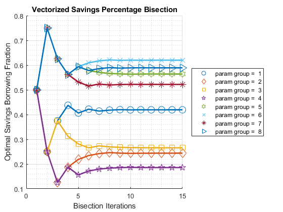

FF_OPTIM_BISEC_SAVEZRONE Bisection Vectorized
Standard Vectorized Bisection given anonymous function that outputs
the derivative of the optimal savings function. The function assumes
that the lower and upper bounds starting points are the same for each
row of the input parameter matrix. Savings problem where agents save 0
to 100 percent of available resoures (including borrowing bounds in
resource).
The exact solution savings dynamic programming code, both looped and
vectorized versions, rely on this function to compute optimal savings
choices.
While this is designed for solving savings choices. This also solves a
variety of other bisection type problems. For example, given minimum
and maximum bounds on interest rates, this code here also can solve
for the intersecting point of aggregate demand and supply curves.
* FC_DERI_WTH_UNIROOT anonymous function handle, given an array of asset
choice fractions, savings given resource availability (including
borrowing bounds), compute derivative value.
mp_bisec_ctrlinfo = containers.Map('KeyType','char', 'ValueType','any');
% number of iterations
mp_bisec_ctrlinfo('it_bisect_max_iter') = 15;
% starting savings share, common for all
mp_bisec_ctrlinfo('fl_x_left_start') = 10e-6;
% max savings share, common for all
mp_bisec_ctrlinfo('fl_x_right_start') = 1-10e-6;
% override default support_map values [AR_OPTI_SAVE_FRAC] = FF_OPTIM_BISEC_SAVEZRONE() default optimal
saving and borrowing fractions.
[AR_OPTI_SAVE_FRAC] = FF_OPTIM_BISEC_SAVEZRONE(FC_DERI_WTH_UNIROOT,
BL_VERBOSE, BL_TIMER, MP_BISEC_CTRLINFO) decide if to print verbose,
verbose print will generate graphical and tabular outputs, control
timer, and change iteration number of points per iteration via
mp_bisec_ctrlinfo_ext.
[AR_OPTI_SAVE_FRAC, AR_OPTI_SAVE_LEVEL] =
FF_OPTIM_BISEC_SAVEZRONE(FC_DERI_WTH_UNIROOT) given function handle
for savings borrowing function derivative with an array of outputs,
each representing a different set of state-space points, solve for
optimal savings levels and savings fractions.
[AR_OPTI_SAVE_FRAC, AR_OPTI_SAVE_LEVEL, AR_OPTI_FOC_OBJ] =
FF_OPTIM_BISEC_SAVEZRONE(FC_DERI_WTH_UNIROOT) also output FOC
objective.
[AR_OPTI_SAVE_FRAC, AR_OPTI_SAVE_LEVEL, AR_OPTI_FOC_OBJ,
TB_BISEC_INFO] = FF_OPTIM_BISEC_SAVEZRONE(FC_DERI_WTH_UNIROOT, true) also
output convergence iteration information.
see also FX_OPTIM_BISEC_SAVEZRONE, FF_OPTIM_MLSEC_SAVEZRONE,
FF_OPTIM_MZOOM_SAVEZRONE
Contents
function varargout = ff_optim_bisec_savezrone(varargin)
if (~isempty(varargin))
bl_default_test = false;
bl_verbose = false;
bl_timer = false;
if (length(varargin) == 1)
[fc_deri_wth_uniroot] = varargin{:};
elseif (length(varargin) == 2)
[fc_deri_wth_uniroot, bl_verbose] = varargin{:};
elseif (length(varargin) == 3)
[fc_deri_wth_uniroot, bl_verbose, bl_timer] = varargin{:};
elseif (length(varargin) == 4)
[fc_deri_wth_uniroot, bl_verbose, bl_timer, mp_bisec_ctrlinfo_ext] = varargin{:};
end
else
close all;
bl_default_test = true;
bl_verbose = true;
bl_timer = true;
it_exam = 2;
if(it_exam==1)
ar_z1 = [1,1,2,2,3,3]';
ar_z2 = [3,3,2,2,1,1]';
ar_r = 1.10 + zeros(size(ar_z1));
ar_beta = [0.80, 0.95, 0.80, 0.95, 0.80, 0.95]';
elseif(it_exam==2)
rng(123);
it_draws = 8;
ar_z1 = exp(rand([it_draws,1])*3-1.5);
ar_z2 = exp(rand([it_draws,1])*3-1.5);
ar_r = (rand(it_draws,1)*10.0);
ar_beta = [rand(round(it_draws/2),1)*1; rand(round(it_draws/2),1)*1+1];
elseif(it_exam==3)
rng(123);
it_draws = 6250000;
bl_default_test = false;
bl_verbose = false;
bl_timer = false;
ar_z1 = exp(rand([it_draws,1])*3-1.5);
ar_z2 = exp(rand([it_draws,1])*3-1.5);
ar_r = (rand(it_draws,1)*10.0);
ar_beta = [rand(round(it_draws/2),1)*1; rand(round(it_draws/2),1)*1+1];
elseif(it_exam==4)
[ar_z1, ar_z2, ar_r, ar_beta] = deal(0.4730, 0.6252, 0.0839, 0.7365);
end
fc_deri_wth_uniroot = @(x) ffi_intertemporal_max(x, ar_z1, ar_z2, ar_r, ar_beta);
end
Set and Update Support Map
mp_bisec_ctrlinfo = containers.Map('KeyType','char', 'ValueType','any');
mp_bisec_ctrlinfo('it_bisect_max_iter') = 15;
mp_bisec_ctrlinfo('fl_x_left_start') = 10e-6;
mp_bisec_ctrlinfo('fl_x_right_start') = 1-10e-6;
if (length(varargin)>=4)
mp_bisec_ctrlinfo = [mp_bisec_ctrlinfo; mp_bisec_ctrlinfo_ext];
end
Parse mp_grid_control
params_group = values(mp_bisec_ctrlinfo, {'it_bisect_max_iter'});
[it_bisect_max_iter] = params_group{:};
params_group = values(mp_bisec_ctrlinfo, {'fl_x_left_start', 'fl_x_right_start'});
[fl_x_left_start, fl_x_right_start] = params_group{:};
Timer Start
if (bl_timer)
tic;
end
Evaluate At lower and Upper Savings Bounds
[ar_lower_fx, ~] = fc_deri_wth_uniroot(fl_x_left_start);
[ar_upper_fx, ~] = fc_deri_wth_uniroot(fl_x_right_start);
ar_lower_fx_init = ar_lower_fx;
ar_upper_fx_init = ar_upper_fx;
ar_lower_x = fl_x_left_start + zeros(size(ar_lower_fx));
ar_upper_x = fl_x_right_start + zeros(size(ar_upper_fx));
if (bl_verbose)
tb_bisec_info = array2table([ar_lower_x, ar_upper_x, ar_lower_fx, ar_upper_fx]');
tb_bisec_info.Properties.RowNames = ...
matlab.lang.makeValidName(["a", "b", "f_a","f_b"]);
ar_st_cates = ["init", "init", "init", "init"];
tb_bisec_info = addvars(tb_bisec_info, ar_st_cates', 'Before', 1);
end
First Mid Point
it_ctr_bisec = 1;
ar_mid_x = (ar_lower_x + ar_upper_x)/2;
[ar_mid_fx, ~] = fc_deri_wth_uniroot(ar_mid_x);
if (bl_verbose)
tb_p = array2table([ar_mid_fx, ar_mid_x]');
ar_st_row_names = [...
string(['it' num2str(it_ctr_bisec) '_fp']),...
string(['it' num2str(it_ctr_bisec) '_p'])];
tb_p.Properties.RowNames = matlab.lang.makeValidName(ar_st_row_names);
ar_st_cates = ["fatx", "x"];
tb_p = addvars(tb_p, ar_st_cates', 'Before', 1);
tb_bisec_info = [tb_bisec_info; tb_p];
end
Iterate until Bounds Reached
it_ctr_bisec = 2;
while (it_ctr_bisec <= it_bisect_max_iter)
f_ap = ar_lower_fx.*ar_mid_fx;
ar_upper_x(f_ap<0) = ar_mid_x(f_ap<0);
ar_lower_x(f_ap>=0) = ar_mid_x(f_ap>=0);
ar_mid_x = (ar_lower_x + ar_upper_x)/2;
[ar_mid_fx, ar_mid_saveborr_level] = fc_deri_wth_uniroot(ar_mid_x);
if (bl_verbose)
tb_p = array2table([ar_mid_fx, ar_mid_x]');
ar_st_row_names = [...
string(['it' num2str(it_ctr_bisec) '_fp']),...
string(['it' num2str(it_ctr_bisec) '_p'])];
tb_p.Properties.RowNames = matlab.lang.makeValidName(ar_st_row_names);
ar_st_cates = ["fatx", "x"];
tb_p = addvars(tb_p, ar_st_cates', 'Before', 1);
tb_bisec_info = [tb_bisec_info; tb_p];
if(it_ctr_bisec == it_bisect_max_iter)
tb_p_lvl = array2table([ar_mid_saveborr_level]');
ar_st_row_names = string(['it' num2str(it_ctr_bisec) '_level']);
tb_p_lvl.Properties.RowNames = matlab.lang.makeValidName(ar_st_row_names);
ar_st_cates = ["level"];
tb_p_lvl = addvars(tb_p_lvl, ar_st_cates', 'Before', 1);
tb_bisec_info = [tb_bisec_info; tb_p_lvl];
end
end
it_ctr_bisec = it_ctr_bisec + 1;
end
Return
ar_opti_save_frac = ar_mid_x;
ar_opti_save_level = ar_mid_saveborr_level;
ar_opti_foc_obj = ar_mid_fx;
if(isscalar(ar_opti_save_frac))
if (ar_lower_fx_init*ar_upper_fx_init > 0)
ar_opti_save_frac = NaN;
ar_opti_save_level = NaN;
ar_opti_foc_obj = NaN;
end
else
ar_nosolu = (ar_lower_fx_init.*ar_upper_fx_init);
ar_opti_save_frac(ar_nosolu>0) = NaN;
ar_opti_save_level(ar_nosolu>0) = NaN;
ar_opti_foc_obj(ar_nosolu>0) = NaN;
end
Timer End
if (bl_timer)
toc;
end
Elapsed time is 0.089725 seconds.
print details
if (bl_verbose)
print_string = ['iteration=' num2str(it_ctr_bisec) ...
', norm(ar_mid_fx)=' num2str(norm(ar_mid_fx))];
disp(['BISECT END: ' print_string]);
if (bl_default_test)
[ar_opti_saveborr_frac, ar_opti_saveborr_level] = ...
ffi_intertemporal_max_solu(ar_z1, ar_z2, ar_r, ar_beta);
tb_p_exact = array2table(...
[ar_opti_saveborr_frac, ar_opti_saveborr_level,...
abs(ar_opti_saveborr_frac-ar_mid_x),...
abs(ar_opti_saveborr_level-ar_mid_saveborr_level)]');
ar_st_row_names = string([...
"exact solu saveborr frac",...
"exact solu saveborr level",...
"exact solu saveborr frac gap",...
"exact solu saveborr level gap"]);
tb_p_exact.Properties.RowNames = matlab.lang.makeValidName(ar_st_row_names);
ar_st_cates = ["exact", "exact", "exact", "exact"];
tb_p_exact = addvars(tb_p_exact, ar_st_cates', 'Before', 1);
tb_bisec_info = [tb_bisec_info; tb_p_exact];
end
cl_col_names = ["vartype", strcat('paramgroup', string((2:size(tb_bisec_info,2))))];
tb_bisec_info.Properties.VariableNames = cl_col_names;
disp(tb_bisec_info)
mt_iter_print = tb_bisec_info{strcmp(tb_bisec_info.vartype, "x"), 2:end};
mt_iter_print = mt_iter_print';
mp_support_graph = containers.Map('KeyType', 'char', 'ValueType', 'any');
mp_support_graph('cl_st_graph_title') = {'Vectorized Savings Percentage Bisection'};
mp_support_graph('cl_st_ytitle') = {'Optimal Savings Borrowing Fraction'};
mp_support_graph('cl_st_xtitle') = {'Bisection Iterations'};
mp_support_graph('st_legend_loc') = 'eastoutside';
mp_support_graph('bl_graph_logy') = false;
mp_support_graph('st_rowvar_name') = 'param group =';
mp_support_graph('it_legend_select') = 10;
mp_support_graph('st_rounding') = '3.0f';
ff_graph_grid(mt_iter_print, [1:size(mt_iter_print,1)], [1:size(mt_iter_print,2)], mp_support_graph);
mp_container_map = containers.Map('KeyType','char', 'ValueType','any');
mp_container_map('ar_opti_save_frac') = ar_opti_save_frac';
mp_container_map('ar_opti_foc_obj') = ar_opti_foc_obj';
if (nargout>=2)
mp_container_map('ar_opti_save_level') = ar_opti_save_level';
end
ff_container_map_display(mp_container_map, 10, 10);
end
BISECT END: iteration=16, norm(ar_mid_fx)=0.00030653
Return
varargout = cell(nargout,0);
for it_k = 1:nargout
if (it_k==1)
ob_out_cur = ar_opti_save_frac;
elseif (it_k==2)
ob_out_cur = ar_opti_save_level;
elseif (it_k==3)
ob_out_cur = ar_opti_foc_obj;
elseif (it_k==4 && bl_verbose)
ob_out_cur = tb_bisec_info;
end
varargout{it_k} = ob_out_cur;
end
end
Intertemporal Maximization with Log Util, no Shock, Two Periods, Endowments
see https://fanwangecon.github.io/Math4Econ/derivative_application/htmlpdfm/K_save_households.html
function [ar_deri_zero, ar_saveborr_level] = ...
ffi_intertemporal_max(ar_saveborr_frac, z1, z2, r, beta)
ar_saveborr_level = ar_saveborr_frac.*(z1+z2./(1+r)) - z2./(1+r);
ar_deri_zero = 1./(ar_saveborr_level-z1) + (beta.*(r+1))./(z2 + ar_saveborr_level.*(r+1));
end
Solution Intertemporal Maximization with Log Util, no Shock, Two Periods, Endowments
see https://fanwangecon.github.io/Math4Econ/derivative_application/htmlpdfm/K_save_households.html
function [ar_opti_saveborr_frac, ar_opti_saveborr_level] = ...
ffi_intertemporal_max_solu(z1, z2, r, beta)
ar_opti_saveborr_level = (z1.*beta.*(1+r) - z2)./((1+r).*(1+beta));
ar_opti_saveborr_frac = (ar_opti_saveborr_level + z2./(1+r))./(z1+z2./(1+r));
end
vartype paramgroup2 paramgroup3 paramgroup4 paramgroup5 paramgroup6 paramgroup7 paramgroup8 paramgroup9
_______ ___________ ___________ ___________ ___________ ___________ ___________ ___________ ___________
a "init" 1e-05 1e-05 1e-05 1e-05 1e-05 1e-05 1e-05 1e-05
b "init" 0.99999 0.99999 0.99999 0.99999 0.99999 0.99999 0.99999 0.99999
f_a "init" 33802 40925 67047 15411 63263 1.9839e+05 25282 70686
f_b "init" -46789 -1.2672e+05 -1.8532e+05 -67518 -48900 -1.2164e+05 -23149 -49303
it1_fp "fatx" -0.25973 -1.7159 -2.3655 -1.0421 0.28726 1.535 0.042644 0.42766
it1_p "x" 0.5 0.5 0.5 0.5 0.5 0.5 0.5 0.5
it2_fp "fatx" 0.72822 -0.052631 0.21087 -0.28379 -1.1125 -2.2202 -0.58887 -1.0296
it2_p "x" 0.25 0.25 0.25 0.25 0.74999 0.74999 0.74999 0.74999
it3_fp "fatx" 0.15277 1.8256 -1.1773 0.46124 -0.29179 -0.069428 -0.21281 -0.18376
it3_p "x" 0.375 0.12501 0.375 0.12501 0.625 0.625 0.625 0.625
it4_fp "fatx" -0.059183 0.62299 -0.55013 -0.0090579 0.0069602 0.74664 -0.079677 0.12972
it4_p "x" 0.4375 0.18751 0.3125 0.18751 0.5625 0.5625 0.5625 0.5625
it5_fp "fatx" 0.044028 0.2488 -0.19454 0.1861 -0.13821 0.34715 -0.017964 -0.023106
it5_p "x" 0.40625 0.21876 0.28125 0.15626 0.59375 0.59375 0.53125 0.59375
it6_fp "fatx" -0.0080863 0.090981 0.00054305 0.081339 -0.064832 0.14171 0.012387 0.054017
it6_p "x" 0.42188 0.23438 0.26563 0.17188 0.57812 0.60937 0.51562 0.57812
it7_fp "fatx" 0.017822 0.017593 -0.098707 0.034591 -0.028768 0.036948 -0.0027658 0.015665
it7_p "x" 0.41406 0.24219 0.27344 0.17969 0.57031 0.61719 0.52344 0.58594
it8_fp "fatx" 0.0048335 -0.017893 -0.049532 0.012405 -0.010865 -0.016025 0.0048149 -0.003664
it8_p "x" 0.41797 0.2461 0.26954 0.1836 0.5664 0.62109 0.51953 0.58984
it9_fp "fatx" -0.0016347 -0.00024633 -0.02461 0.0015865 -0.0019434 0.010514 0.0010259 0.0060142
it9_p "x" 0.41992 0.24415 0.26758 0.18555 0.56445 0.61914 0.52148 0.58789
it10_fp "fatx" 0.0015973 0.0086488 -0.012063 -0.0037571 0.0025106 -0.0027422 -0.00086962 0.0011786
it10_p "x" 0.41895 0.24317 0.26661 0.18653 0.56348 0.62011 0.52246 0.58887
it11_fp "fatx" -1.9235e-05 0.0041952 -0.0057672 -0.0010907 0.00028416 0.0038891 7.8199e-05 -0.0012418
it11_p "x" 0.41944 0.24366 0.26612 0.18604 0.56396 0.61963 0.52197 0.58935
it12_fp "fatx" 0.00078889 0.0019729 -0.0026139 0.00024655 -0.0008295 0.00057428 -0.00039569 -3.1408e-05
it12_p "x" 0.41919 0.2439 0.26587 0.1858 0.56421 0.61987 0.52222 0.58911
it13_fp "fatx" 0.00038479 0.00086292 -0.0010359 -0.00042242 -0.00027263 -0.0010838 -0.00015874 0.00057363
it13_p "x" 0.41931 0.24402 0.26575 0.18592 0.56409 0.61999 0.52209 0.58899
it14_fp "fatx" 0.00018277 0.0003082 -0.00024654 -8.8022e-05 5.7721e-06 -0.00025469 -4.0269e-05 0.00027113
it14_p "x" 0.41937 0.24408 0.26569 0.18586 0.56402 0.61993 0.52203 0.58905
it15_fp "fatx" 8.1766e-05 3.0909e-05 0.00014822 7.9241e-05 -0.00013343 0.00015981 1.8966e-05 0.00011986
it15_p "x" 0.4194 0.24412 0.26566 0.18583 0.56406 0.6199 0.522 0.58908
it15_level "level" 0.56205 -0.070025 0.044431 -0.039424 1.0402 0.48151 2.1656 0.9076
exactSoluSaveborrFrac "exact" 0.41943 0.24412 0.26567 0.18584 0.56403 0.61991 0.52201 0.5891
exactSoluSaveborrLevel "exact" 0.56211 -0.070022 0.044438 -0.039403 1.0402 0.48152 2.1656 0.90765
exactSoluSaveborrFracGap "exact" 2.4705e-05 3.402e-06 1.1458e-05 1.4456e-05 2.9252e-05 1.1766e-05 9.771e-06 2.4181e-05
exactSoluSaveborrLevelGap "exact" 5.28e-05 2.6845e-06 6.1825e-06 2.1411e-05 5.9818e-05 9.6728e-06 4.2208e-05 4.9045e-05

----------------------------------------
xxxxxxxxxxxxxxxxxxxxxxxxxxxxxxxxxxxxxxxx
CONTAINER NAME: mp_container_map ND Array (Matrix etc)
xxxxxxxxxxxxxxxxxxxxxxxxxxxxxxxxxxxxxxxx
i idx ndim numel rowN colN sum mean std coefvari min max
_ ___ ____ _____ ____ ____ __________ __________ __________ ________ ___________ __________
ar_opti_foc_obj 1 1 2 8 1 8 0.00050535 6.3168e-05 9.4141e-05 1.4903 -0.00013343 0.00015981
ar_opti_save_frac 2 2 2 8 1 8 3.41 0.42626 0.17279 0.40536 0.18583 0.6199
xxx TABLE:ar_opti_foc_obj xxxxxxxxxxxxxxxxxx
c1 c2 c3 c4 c5 c6 c7 c8
__________ __________ __________ __________ ___________ __________ __________ __________
r1 8.1766e-05 3.0909e-05 0.00014822 7.9241e-05 -0.00013343 0.00015981 1.8966e-05 0.00011986
xxx TABLE:ar_opti_save_frac xxxxxxxxxxxxxxxxxx
c1 c2 c3 c4 c5 c6 c7 c8
______ _______ _______ _______ _______ ______ _____ _______
r1 0.4194 0.24412 0.26566 0.18583 0.56406 0.6199 0.522 0.58908